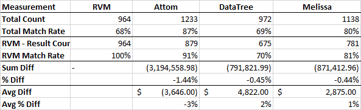
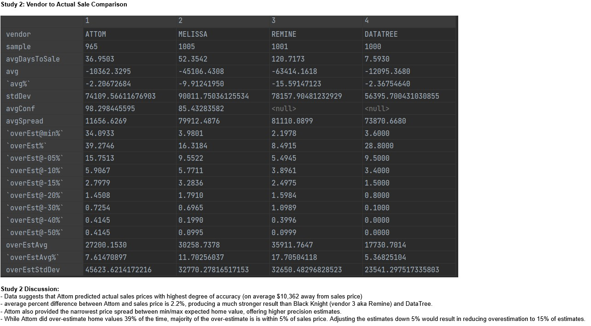
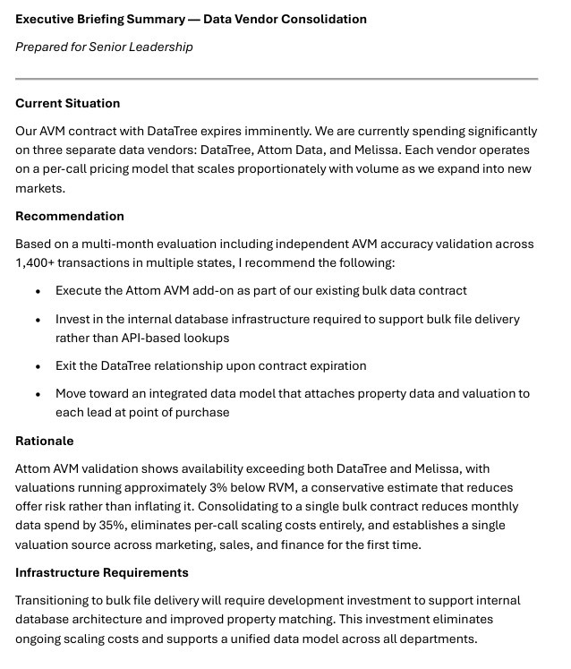

Residential PropTech · Data Strategy & Vendor Management
Driving a multi-month analytical evaluation that consolidated three fragmented data vendors into a unified platform — eliminating siloed valuations across departments, reducing costs by 35%, and eliminating scaling costs entirely.
The Business Context
MV Realty's business model depended on accurate property valuations at every stage of its pipeline. Marketing used valuations to qualify inbound leads worth purchasing. Sales used them to construct offers to prospective clients. Finance used them to underwrite assets and report portfolio value to lending partners.
Three departments. Three different valuation sources. Three different numbers on the same property.
Marketing was running on Melissa Data. Sales was producing offers against RPR's RVM product. Finance was carrying forward whichever figure arrived with the deal. Nobody had designed this fragmentation intentionally — it had accumulated organically as each department solved its own immediate problem with whatever tool was available. The cumulative effect was significant: the asset marketing thought was worth acquiring, the offer sales made, and the value finance was underwriting against were routinely different figures on the same property. The inconsistency was silent, systematic, and compounding at every stage of the pipeline.
Alongside the data quality problem was a cost structure problem. The business was running significant monthly spend across three vendors — DataTree AVM, Attom Data, and Melissa — all priced on a per-API-call model. As the business expanded from 3 markets toward 33 states, that cost would scale proportionately with volume. Every new market, every new agent, every new lead purchased added to the monthly data bill.
My Role
I identified both problems, built the analytical case for consolidation over several months, managed the vendor evaluation and negotiation process, secured executive buy-in, and defined the infrastructure architecture for the replacement system. I coordinated the accuracy validation with our senior analyst before making the final recommendation to leadership.
This was not a straightforward procurement exercise. It required navigating contract timing windows, a vendor attempting to renegotiate previously agreed pricing, a DataTree billing situation that introduced additional commercial complexity, and the need to validate a replacement AVM product against real transaction data before committing to a multi-year contract.
Validating the Replacement AVM
Before recommending any transition I ran an independent accuracy analysis comparing Attom AVM against RVM across 1,400+ offers from a recent 45-day period. I followed this with a broader multi-state validation to ensure Florida results held nationally.
AVM Accuracy Comparison — Four Vendor Analysis

Comparative accuracy analysis across RVM, Attom, DataTree, and Melissa. Attom AVM shows the highest match rate at 87% with a -1.44% average variance against actual sales — a conservative posture that reduces offer risk. DataTree ran +2% above RVM; Melissa +1% — both systematically inflating valuations.
Study 2 — Vendor to Actual Sale Comparison

Four-vendor comparison against actual closed sale prices. Data suggests Attom predicted actual sales prices with the highest degree of accuracy — on average closest to actual sale price — while offering the narrowest price spread between min/max expected home value. The senior analyst concluded: Attom AVM is a more conservative and reliable estimate than the alternatives.
Before & After — Vendor Stack Comparison
| Dimension | Multi-Vendor (Before) | Consolidated Platform (After) |
|---|---|---|
| Vendors | DataTree AVM, Attom Data, Melissa | Attom Bulk Bundle |
| Pricing Model | Per-call — scales with volume | Fixed bulk — no scaling cost |
| Monthly Cost | Significant — three separate contracts | 35% reduction |
| AVM Availability | Varies by vendor | Highest across all three |
| AVM Posture | At or above market value | ~3% conservative — reduces offer risk |
| Departments Served | Siloed — different vendor per function | Unified — marketing, sales, finance |
| Scaling Cost | Increases with every new market | Eliminated |
| Data Freshness | API on-demand | Monthly bulk refresh — centralized DB |
Building the Executive Case
I presented a full briefing to senior leadership covering the complete situation — current contract status across all three vendors, the Attom bundle terms, accuracy validation results, infrastructure requirements, and a clear recommendation to proceed. The briefing mapped each current use case to its replacement source and outlined the development investment required to support the transition.
Executive Briefing Summary — Data Vendor Consolidation

Executive briefing prepared for senior leadership — covering the current situation, recommendation, rationale, and infrastructure requirements. This document drove the consolidation decision.
Redesigning the Infrastructure
The architectural shift was as significant as the vendor decision. The previous model — individual API calls per property lookup across multiple vendors — meant data costs scaled with every transaction. The replacement model centralized bulk nationwide data refreshed monthly into an internal database, eliminating per-call costs entirely.
Centralizing the data layer meant every department — marketing, sales, finance — queried the same internal database for valuations. The fragmentation that had produced three different numbers on the same property was structurally eliminated. For the first time the business was working from a single source of truth across the entire pipeline.
The Outcome
Monthly data expenditure dropped by 35% with a fixed cost structure that no longer scaled with business volume. Projected against the growth trajectory from 3 to 33 states, the avoided scaling costs significantly exceeded the direct savings figure.
More consequentially, the business established unified valuation infrastructure for the first time. Marketing, sales, and finance were working from the same number on every property. The silent inconsistency that had been compounding across every deal was eliminated by design rather than managed by exception. Attom AVM's conservative posture also improved underwriting discipline — offers built on systematically lower valuations reduced the risk of overpaying for assets, with direct implications for portfolio quality.
What I'd Do Differently
The transition timeline was tighter than ideal — not because the evaluation started late, but because competing development priorities and the pace of geographic expansion meant resources weren't available to act sooner. I had been building the analytical case for consolidation well in advance of the contract deadline.
The lesson I took was about how to frame data infrastructure decisions within a fast-moving organization. Positioning this as back-office cost optimization — even with strong analytical support — meant it competed with feature development for resources. Leading with the risk to valuation consistency across the credit facility and borrowing base would have landed differently with the people controlling prioritization decisions. Finance and risk framing moves faster than operational efficiency framing in organizations where capital relationships are central to the business model.
Let's Talk
I'm currently exploring Senior Product Manager opportunities in platform, data systems, and operational automation — remote, nationwide.
Connect on LinkedIn →